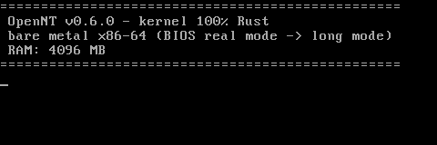
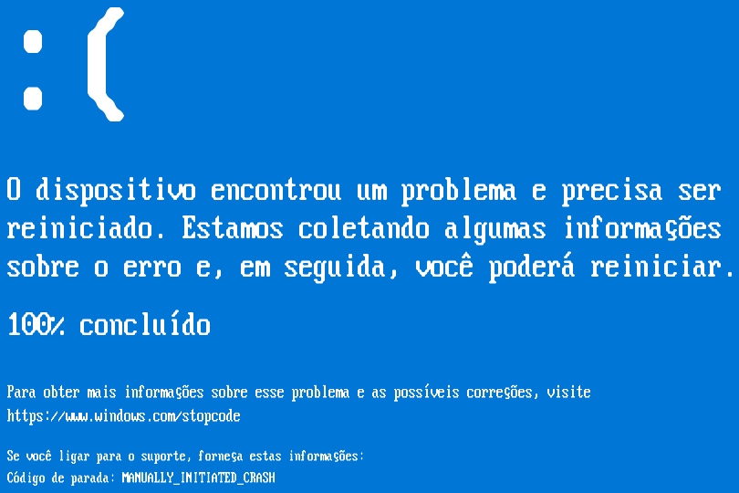
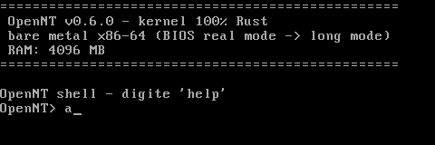
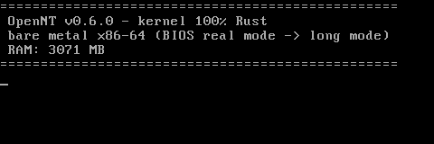
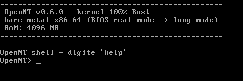

O que roda
Os binários reais da Microsoft que o OpenNT carrega, sem recompilar nem modificar, e os marcos que eles alcançam. Hoje: 49 de 79 binários rodam, 28 são parciais e 2 ainda não rodam.
- Roda — um teste automático de boot passa e o binário faz o papel dele.
- Parcial — carrega e roda até um ponto; o card diz onde para.
- Não roda — ainda sem teste automático: um alvo, não um resultado.
A captura de cada card é a tela do QEMU no fim do teste que o prova, com as linhas da serial que mostram o resultado. O estado sai dos dados: do teste (uma falha conhecida dá Parcial) e do estado declarado do componente do binário; cada card diz de onde veio.
Marcos
O que o sistema já faz de ponta a ponta com os binários da Microsoft, e o que ainda falta.
O smss.exe cria o csrss.exe
RodaO smss.exe real é o primeiro processo: monta a sessão e cria o smss da sessão, que carrega o win32k.sys e cria o csrss.exe real, todos com a ntdll real.
Teste:
smss-csrssEstado: o teste smss-csrss passa.

Tela do QEMU no fim do teste smss-csrss, 15/11/2026Serial no fim do teste
... [usermode] syscall NtTraceControl sem implementacao de modo usuario [usermode] syscall NtTraceControl sem implementacao de modo usuario [usermode] syscall NtTraceControl sem implementacao de modo usuario [init] csrss.exe (pid 48) pediu o servico 0x12e3 da tabela do win32k (carregado) [init] csrss.exe (pid 48) criado pelo smss.exe (pid 40); smss inicial (pid 24) e csrss vivos ao pedir o win32k SMSS_CSRSS_OKO win32k.sys atende o csrss.exe
RodaO smss da sessão carrega o win32k.sys, o win32kbase.sys e o win32kfull.sys; a thread do csrss vira thread GUI e o NtGdiInit e o NtUserInitialize são atendidos.
Teste:
win32kEstado: o teste win32k passa.

Tela do QEMU no fim do teste win32k, 15/11/2026Serial no fim do teste
... WIN32K_LOADED ... [usermode] syscall NtTraceControl sem implementacao de modo usuario [usermode] syscall NtTraceControl sem implementacao de modo usuario [init] csrss.exe (pid 48) pediu o servico 0x12e3 da tabela do win32k (carregado) [init] csrss.exe (pid 48) criado pelo smss.exe (pid 40); smss inicial (pid 24) e csrss vivos ao pedir o win32k SMSS_CSRSS_OK [init] csrss.exe (pid 48): thread GUI pelo PsConvertToGuiThread -> 0x0Adaptador de vídeo iniciado
RodaCom o BasicDisplay.sys sobre o dxgkrnl.sys, a sessão do win32k faz o dxgkrnl iniciar o adaptador, que usa o framebuffer VBE 1024x768 e cria o \Device\Video0; o InitVideo da sessão 0 termina e o NtUserInitialize do csrss volta com sucesso.
Limite: O csrss segue: cria a \Windows\SbApiPort, o smss executa o wininit.exe e o winlogon.exe da sessão 1, e o wininit cria a WinSta0 com as Desktops dele (teste winsta0).
Teste:
win32k-displayEstado: o teste win32k-display passa.

Tela do QEMU no fim do teste win32k-display, 15/11/2026Serial no fim do teste
... BASICDISPLAY_OK ... SMSS_CSRSS_OK ... [rtl] QueryRegistry path="\Registry\Machine\System\CurrentControlSet\Control\GraphicsDrivers" table=0xffffa007002bf480 [rtl] "MiracastUseIhvDriver" flags=0x120 -> default 0x0 [rtl] "MiracastForceDisable" flags=0x120 -> default 0x0 [display] PCI\VEN_1234&DEV_1111&SUBSYS_11001AF4&REV_02\1&ebb567f&0&10: adaptador iniciado pelo dxgkrnl (DxgkDdiStartDevice do BasicDisplay); interface \??\PCI#V... ADAPTER_STARTED [rtl] QueryRegistry path="\Registry\Machine\System\CurrentControlSet\Control\GraphicsDrivers\BasicDisplay" table=0xffffa007002bf410A WinSta0 do wininit.exe
RodaO wininit.exe real registra o processo de logon, cria a WinSta0 e as Desktops Winlogon, Disconnect e Default, chama o SwitchDesktop, sobe o servidor RPC \PIPE\InitShutdown e cria o services.exe.
Limite: O csrss recusa o services.exe no BaseSrvCreateProcess (STATUS_BAD_IMPERSONATION_LEVEL) e o wininit sai; o RegisterLogonProcess do winlogon.exe da sessão 1 espera a thread de trabalho do msrpc.sys, e nada é desenhado no framebuffer.
Teste:
winsta0Estado: o teste winsta0 passa.
Tela do QEMU no fim do teste winsta0, 16/11/2026Serial no fim do teste
... USER_INITIALIZED ... WINSTA0_OK ... [pe] base=0x140000000 (fisico 0xe74d000) imagem=720896 bytes, 7 secoes [pe] VA 0x140000000 mapeada (176 paginas) [pe] entry point = 0x140033b80 [usermode] services.exe: LdrInitializeThunk em 0x180075c10 (exe entry 0x140033b80, teb 0x7ffffffb5000) [ps] NtCreateUserProcess: services.exe pid=0xb8 tid=0xbc handles 0x24a4/0x24a8 (suspensa) [init] wininit.exe (pid 128) criou services.exe (pid 184) por NtCreateUserProcessTela de bugcheck do Windows 10
RodaO Ctrl direito com o Scroll Lock duas vezes faz o i8042prt.sys real chamar KeBugCheckEx(0xE2); o kernel congela os processadores, desenha a tela azul do Windows 10 no framebuffer de boot (":(", os textos da instalação, o progresso e o código de parada), roda os callbacks dos drivers e para.
Teste:
bugcheckEstado: o teste bugcheck passa.

Tela do QEMU no fim do teste bugcheck, 16/11/2026Serial no fim do teste
... OpenNT> [shell] pronto *** STOP (KeBugCheckEx): 0x000000e2 (0x0, 0x0, 0x0, 0x0) ... [bugcheck] codigo de parada: MANUALLY_INITIATED_CRASH [bugcheck] tela de bugcheck: framebuffer 1024x768 (tipo 2), fonte do BIOS carregada [bugcheck] callback (motivo 2) de wpprecorder.sys: rotina 0xfffff80100353430, componente "mouclass" ... [bugcheck] callback (motivo 2) de wpprecorder.sys: rotina 0xfffff80100353430, componente "WppRecorder" [bugcheck] callback (motivo 2) de ataport.sys: rotina 0xfffff8010002a840, componente "PortDriverStandard" [bugcheck] callback (motivo 2) de ataport.sys: rotina 0xfffff8010002a6a0, componente "IDEP" [bugcheck] coleta de dados do erro: 100% [bugcheck] callbacks: 0 de entrada, 0 de KeRegisterBugCheckCallback [bugcheck] maquina parada (AutoReboot=0)O ntfs.sys monta e grava
RodaO ntfs.sys monta o volume NTFS 3.1 do segundo disco, lê um arquivo pelo Cache Manager e cria, grava e relê outro.
Teste:
ntfsEstado: o teste ntfs passa.

Tela do QEMU no fim do teste ntfs, 15/11/2026Serial no fim do teste
... DRIVER_START_COMPLETED name=ntfs state=4 win32=0 ntstatus=0x0 ... FILE_SYSTEM_WRITE_OK OPENNT-NOVO.TXT FILE_SYSTEM_MOUNT_OK name=ntfs ... [pnp] \Device\Unnamed7: 0 filho(s) no bus OpenNT shell - digite 'help' OpenNT> [shell] pronto [kernel] preempcao por timer ativa (quantum 10ms, LAPIC timer vetor 0x40) [kbd] lendo teclas do driver real (i8042prt+kbdclass) [zw] QuerySystemInformation classe 184 buf=24Teclado pela pilha PS/2 do Windows
RodaO i8042prt.sys e o kbdclass.sys sobem pelo PnP e as teclas chegam ao shell pela IRQ 1, pela ISR e pelo DPC do driver.
Estado: o teste teclado passa.

Tela do QEMU no fim do teste teclado, 15/11/2026Serial no fim do teste
... KBDTEST_OK SELFTEST_OK [kbd] lendo teclas do driver real (i8042prt+kbdclass) OpenNT shell - digite 'help' OpenNT> [shell] pronto [kernel] preempcao por timer ativa (quantum 10ms, LAPIC timer vetor 0x40)Teclado e mouse USB pela pilha do Windows
RodaNa controladora xHCI do QEMU, com interrupções MSI-X, o usbxhci.sys, o usbhub3.sys, o hidusb.sys e o kbdhid.sys e o mouhid.sys sobem pelo PnP, e a tecla mandada pelo monitor do QEMU chega pelo teclado USB ao kbdclass.
Teste:
usbEstado: o teste usb passa.

Tela do QEMU no fim do teste usb, 16/11/2026Serial no fim do teste
... USB_HID_OK ... [kbd] lendo teclas do driver real (kbdhid+kbdclass, \Device\KeyboardClass0) OpenNT shell - digite 'help' OpenNT> [shell] pronto [usb] tecla do kbdhid em \Device\KeyboardClass0: MakeCode 0x1e flags 0x0 USB_KEY_OK a[usb] tecla do kbdhid em \Device\KeyboardClass0: MakeCode 0x1e flags 0x1Pipes e mailslots entre processos
RodaDois processos de usuário conversam pelos npfs.sys e msfs.sys: pipes de mensagens e de bytes, E/S assíncrona e mailslot.
Teste:
pipesEstado: o teste pipes passa.
Tela do QEMU no fim do teste pipes, 15/11/2026Serial no fim do teste
... PHASE6_SELFTEST_OK ... PIPES_OK ... PHASE7_SELFTEST_OK ... [pe] relocada p/ 0xfffff80100270000 (13 fixups) [pe] security cookie semeado em 0xfffff80100277010 [pe] imports de ntoskrnl.exe [pe] entry point = 0xfffff8010027d010 [kernel-library] DllInitialize wpprecorder.sys [rtl] QueryRegistry path="\Registry\Machine\System\CurrentControlSet\Control\WppRecorderDisco lido pela pilha IDE do Windows
RodaO PnP sobe intelide, atapi, disk e partmgr na controladora do QEMU, e os setores lidos pela pilha conferem com os do disco.
Teste:
storageEstado: o teste storage passa.

Tela do QEMU no fim do teste storage, 15/11/2026Serial no fim do teste
... [storage] 8 setores do disco 1 pela pilha real == imagem do xtask (OEM "NTFS ", serie "OPENNT!!") STORAGE_REAL_OK [services] tabela nativa nao registrada: ntdll.dll ausente (NTFS e bundle) KERNEL_RS_OK [usermode] ring 3 armado: GDT em 0xfffff80040af4610, pilha reserva ate 0xffffa0070007ffd0, IST da falta dupla ate 0xffffa007000bffd0, KUSER user em 0x7FFE0000 [usermode] registry seedada (NLS/SessionManager/KnownDlls/SegmentHeap/ProductOptions/IFEO)Desligamento e reinício limpos
RodaO NtShutdownSystem avisa os drivers, o ntfs.sys descarrega o volume, o Registro vai para o disco e a máquina desliga pela ACPI (ou reinicia); o boot seguinte encontra o que foi gravado.
Estado: o teste shutdown passa.
Sem captura ainda:
cargo xtask capturas --only shutdownDisco NVMe pela pilha storport do Windows
RodaO PnP sobe o storport.sys e o stornvme.sys no controlador NVMe do QEMU, e o disk.sys lê o MBR do disco pela LUN do storport.
Limite: O volume da partição ainda não inicia: falta o volume.sys, e com ele o WorkerThread do mountmgr.sys prenderia o contexto de boot.
Teste:
nvmeEstado: o teste nvme passa.

Tela do QEMU no fim do teste nvme, 16/11/2026Serial no fim do teste
... [nvme] \Device\Harddisk0\DR0 presente [nvme] \Device\HarddiskVolume1 presente 95937500 - STORMINI: StorNVMe - POWER: ACTIVE [nvme] setor 0 pela pilha: assinatura 0x4f4e5654, particao tipo 0x07 no LBA 2048, 0x55aa [nvme] \Device\Harddisk0\DR0 do disk.sys sobre a LUN do storport; o setor 0 e o MBR do nvme.img NVME_DISK_OKacpi.sys como raiz dos dispositivos
RodaO acpi.sys carrega a DSDT do QEMU e relata o barramento PCI; o pci.sys enumera as funções, e os árbitros e tradutores dos dois dão as portas, a memória e as IRQs de cada dispositivo.
Teste:
acpiEstado: o teste acpi passa.

Tela do QEMU no fim do teste acpi, 15/11/2026Serial no fim do teste
... ACPI_ROOT_OK ... [pnp] START_DEVICE \Device\Unnamed7 -> 0x0 [pnp] \Device\Unnamed7: 0 filho(s) no bus OpenNT shell - digite 'help' OpenNT> [shell] pronto [kernel] preempcao por timer ativa (quantum 10ms, LAPIC timer vetor 0x40) [kbd] lendo teclas do driver real (i8042prt+kbdclass)Área de trabalho na tela
Não rodaAinda não há sessão gráfica: nenhuma janela é desenhada.
Para: A sessão 0 é a de serviços e usa o dispositivo de exibição desconectado; a tela é da sessão do console (winlogon), que ainda não existe.
Nenhum teste automático ainda.
Estado: sem teste automático.
Programas Win32 (.exe)
Não rodaO smss.exe, o csrss.exe, o wininit.exe e o winlogon.exe reais rodam no boot com o smss; o services.exe é criado, mas o csrss o recusa.
Para: O shell ainda não executa .exe e não há sessão de usuário.
Nenhum teste automático ainda.
Estado: sem teste automático.
Rede pela placa e1000
Não rodaO NDIS, o TCP/IP e o AFD sobem, mas nenhum pacote sai pela placa do QEMU.
Para: Falta ligar o miniport E1G6032E.sys à placa e1000.
Nenhum teste automático ainda.
Estado: sem teste automático.


Drivers do Windows (modo kernel)
Os .sys e .dll de modo kernel, carregados como estão: o Code Integrity da própria Microsoft valida cada imagem e o carregador do OpenNT resolve os imports contra os exports do kernel.
hal.dll
RodaCarrega na fase 1 do boot; os 91 encaminhamentos da imagem ligam aos exports do kernel, que faz o papel da HAL.
Teste:
driversEstado: o teste drivers passa.

Tela do QEMU no fim do teste drivers, 15/11/2026Serial no fim do teste
... [boot] hal.dll carregado (0 exports, 91 encaminhamentos) ... [boot] servicos carregados: 5 ... [boot] cng.sys carregado; \Device\CNG publicado ... [pnp] AddDevice do filtro mouclass -> 0x0 ... [pnp] START_DEVICE \Device\Unnamed2 -> 0x0 [pnp] \Device\Unnamed2: 0 filho(s) no bus OpenNT shell - digite 'help' OpenNT> [shell] pronto [kernel] preempcao por timer ativa (quantum 10ms, LAPIC timer vetor 0x40) [kbd] lendo teclas do driver real (i8042prt+kbdclass)ci.dll e msrpc.sys
RodaA integridade de código do Windows valida cada imagem de kernel pela assinatura embutida ou pelo catálogo da Microsoft.
Teste:
watchdogEstado: o teste watchdog passa.

Tela do QEMU no fim do teste watchdog, 15/11/2026Serial no fim do teste
... DRIVER_START_COMPLETED name=watchdog state=4 win32=0 ntstatus=0x0 ... CI_KERNEL_IMAGE_RESULT name=\FS\i8042prt.sys status=0x0 validationMode=2 signatureContext=0x0 signingLevel=12 imageFlags=0x4 verificationFlags=0x0 importsResolv... ... [pnp] START_DEVICE \Device\Unnamed2 -> 0x0 [pnp] \Device\Unnamed2: 0 filho(s) no bus OpenNT shell - digite 'help' OpenNT> [shell] pronto [kernel] preempcao por timer ativa (quantum 10ms, LAPIC timer vetor 0x40) [kbd] lendo teclas do driver real (i8042prt+kbdclass)cng.sys
RodaCarrega no boot, registra a fonte de entropia e publica \Device\CNG.
Teste:
driversEstado: o teste drivers passa.
Tela do QEMU no fim do teste drivers, 15/11/2026Serial no fim do teste
... [boot] hal.dll carregado (0 exports, 91 encaminhamentos) ... [boot] servicos carregados: 5 ... [boot] cng.sys carregado; \Device\CNG publicado ... [pnp] AddDevice do filtro mouclass -> 0x0 ... [pnp] START_DEVICE \Device\Unnamed2 -> 0x0 [pnp] \Device\Unnamed2: 0 filho(s) no bus OpenNT shell - digite 'help' OpenNT> [shell] pronto [kernel] preempcao por timer ativa (quantum 10ms, LAPIC timer vetor 0x40) [kbd] lendo teclas do driver real (i8042prt+kbdclass)i8042prt.sys
RodaLiga-se aos dispositivos PS/2 da placa-mãe pelo PnP, com as ISRs nas IRQs 1 e 12; é por ele que o shell recebe as teclas.
Estado: o teste teclado passa.
Tela do QEMU no fim do teste teclado, 15/11/2026Serial no fim do teste
... KBDTEST_OK SELFTEST_OK [kbd] lendo teclas do driver real (i8042prt+kbdclass) OpenNT shell - digite 'help' OpenNT> [shell] pronto [kernel] preempcao por timer ativa (quantum 10ms, LAPIC timer vetor 0x40)kbdclass.sys
RodaFiltro de classe sobre o i8042prt.sys: entrega as teclas em \Device\KeyboardClass0.
Estado: o teste teclado passa.
Tela do QEMU no fim do teste teclado, 15/11/2026Serial no fim do teste
... KBDTEST_OK SELFTEST_OK [kbd] lendo teclas do driver real (i8042prt+kbdclass) OpenNT shell - digite 'help' OpenNT> [shell] pronto [kernel] preempcao por timer ativa (quantum 10ms, LAPIC timer vetor 0x40)mouclass.sys
RodaAnexa-se sobre o i8042prt.sys e a pilha do mouse inicia.
Limite: Nenhum programa lê o mouse ainda.
Teste:
driversEstado: o teste drivers passa.
Tela do QEMU no fim do teste drivers, 15/11/2026Serial no fim do teste
... [boot] hal.dll carregado (0 exports, 91 encaminhamentos) ... [boot] servicos carregados: 5 ... [boot] cng.sys carregado; \Device\CNG publicado ... [pnp] AddDevice do filtro mouclass -> 0x0 ... [pnp] START_DEVICE \Device\Unnamed2 -> 0x0 [pnp] \Device\Unnamed2: 0 filho(s) no bus OpenNT shell - digite 'help' OpenNT> [shell] pronto [kernel] preempcao por timer ativa (quantum 10ms, LAPIC timer vetor 0x40) [kbd] lendo teclas do driver real (i8042prt+kbdclass)wmilib.sys e WppRecorder.sys
RodaBibliotecas de export carregadas pelo primeiro driver que as importa (ataport, kbdclass, i8042prt, mouclass).
Estado: o teste teclado passa.
Tela do QEMU no fim do teste teclado, 15/11/2026Serial no fim do teste
... KBDTEST_OK SELFTEST_OK [kbd] lendo teclas do driver real (i8042prt+kbdclass) OpenNT shell - digite 'help' OpenNT> [shell] pronto [kernel] preempcao por timer ativa (quantum 10ms, LAPIC timer vetor 0x40)watchdog.sys
RodaValidado pelo catálogo, o DriverEntry retorna sucesso; o dxgkrnl.sys e o win32k.sys importam dele.
Teste:
watchdogEstado: o teste watchdog passa.
Tela do QEMU no fim do teste watchdog, 15/11/2026Serial no fim do teste
... DRIVER_START_COMPLETED name=watchdog state=4 win32=0 ntstatus=0x0 ... CI_KERNEL_IMAGE_RESULT name=\FS\i8042prt.sys status=0x0 validationMode=2 signatureContext=0x0 signingLevel=12 imageFlags=0x4 verificationFlags=0x0 importsResolv... ... [pnp] START_DEVICE \Device\Unnamed2 -> 0x0 [pnp] \Device\Unnamed2: 0 filho(s) no bus OpenNT shell - digite 'help' OpenNT> [shell] pronto [kernel] preempcao por timer ativa (quantum 10ms, LAPIC timer vetor 0x40) [kbd] lendo teclas do driver real (i8042prt+kbdclass)ksecdd.sys
RodaLiga-se ao host de autorização do kernel, conversa com o cng.sys por IOCTLs e publica \Device\KsecDD.
Teste:
ksecddEstado: o teste ksecdd passa.

Tela do QEMU no fim do teste ksecdd, 15/11/2026Serial no fim do teste
... [pe] imports de HAL.dll [pe] imports de msrpc.sys [pe] entry point = 0xfffff801003b8010 [driver] minio\security\base\lsa\security\driver\asyncsspi.cxx - SspiInitAsyncInterface DRIVER_START_COMPLETED name=ksecdd state=4 win32=0 ntstatus=0x0 KERNEL_RS_OKksecpkg.sys
RodaO pacote de segurança do kernel (NTLM e SSL) sobe sobre o ksecdd.sys e o cng.sys.
Teste:
ksecpkgEstado: o teste ksecpkg passa.

Tela do QEMU no fim do teste ksecpkg, 15/11/2026Serial no fim do teste
... DRIVER_START_COMPLETED name=ksecpkg state=4 win32=0 ntstatus=0x0 KERNEL_RS_OK [usermode] ring 3 armado: GDT em 0xfffff80040adbb90, pilha reserva ate 0xffffa0070003ffd0, IST da falta dupla ate 0xffffa0070007ffd0, KUSER user em 0x7FFE0000 [usermode] registry seedada (NLS/SessionManager/KnownDlls/SegmentHeap/ProductOptions/IFEO) [csr] sessao 0: SharedSection e ApiPort prontos [scmr] ntsvcs registrado; gerenciador disponivelnull.sys
RodaPublica \Device\Null; um processo lê (fim de arquivo) e escreve pelo despacho do próprio driver.
Teste:
nullEstado: o teste null passa.

Tela do QEMU no fim do teste null, 15/11/2026Serial no fim do teste
... DRIVER_START_COMPLETED name=null state=4 win32=0 ntstatus=0x0 ... [csr] sessao 0: SharedSection e ApiPort prontos [scmr] ntsvcs registrado; gerenciador disponivel [usermode] abre device: \Device\Null [null] \Device\Null: abertura=0x0 leitura=0xc0000011 (iosb 0x0, 1 bytes, buffer intacto=true) escrita=0x0 (iosb 0x0, 77 bytes) fechamento=0x0 NULL_DEVICE_OK leitura=EOF escrita=77 [ci-loader] validating \FS\kbdclass.sys bytes=71480beep.sys
RodaPublica \Device\Beep; o IOCTL_BEEP_SET passa pela fila do dispositivo e pelo StartIo do driver.
Teste:
beepEstado: o teste beep passa.

Tela do QEMU no fim do teste beep, 15/11/2026Serial no fim do teste
... DRIVER_START_COMPLETED name=beep state=4 win32=0 ntstatus=0x0 ... [csr] sessao 0: SharedSection e ApiPort prontos [scmr] ntsvcs registrado; gerenciador disponivel [usermode] abre device: \Device\Beep [beep] \Device\Beep: abertura=0x0 redirecionamento=0x103 BEEP_SET=0x0 entregue=(0x0, 8 bytes, 440 Hz, 100 ms) fila=Some((0, 0, true, 0)) sem-redirecionamento=0x... BEEP_DEVICE_OK StartIo=440Hz/100ms fila=livre [ci-loader] validating \FS\kbdclass.sys bytes=71480ahcache.sys, ws2ifsl.sys, bowser.sys e afunix.sys
RodaQuatro drivers de software sobem um depois do outro pela chave da instalação e o DriverEntry de cada um retorna sucesso; o afunix.sys traz o NETIO.SYS como dependência de import.
Teste:
drivers-softwareEstado: o teste drivers-software passa.
Tela do QEMU no fim do teste drivers-software, 16/11/2026Serial no fim do teste
... DRIVER_START_COMPLETED name=ahcache state=4 win32=0 ntstatus=0x0 ... DRIVER_START_COMPLETED name=ws2ifsl state=4 win32=0 ntstatus=0x0 ... DRIVER_START_COMPLETED name=bowser state=4 win32=0 ntstatus=0x0 ... DRIVER_START_COMPLETED name=afunix state=4 win32=0 ntstatus=0x0 ... [pnp] START_DEVICE \Device\Unnamed2 -> 0x0 [pnp] \Device\Unnamed2: 0 filho(s) no bus OpenNT shell - digite 'help' OpenNT> [shell] pronto [kernel] preempcao por timer ativa (quantum 10ms, LAPIC timer vetor 0x40) [kbd] lendo teclas do driver real (i8042prt+kbdclass)fs_rec.sys
RodaRegistra os reconhecedores de file system; cada um examina o volume NTFS e responde como no Windows.
Teste:
fs_recEstado: o teste fs_rec passa.
Tela do QEMU no fim do teste fs_rec, 15/11/2026Serial no fim do teste
... DRIVER_START_COMPLETED name=fs_rec state=4 win32=0 ntstatus=0x0 ... [fs_rec] IRP_MN_MOUNT_VOLUME do volume NTFS -> ReFSRecognizer (fila 8): 0xc000014f [fs_rec] IRP_MN_MOUNT_VOLUME do volume NTFS -> ReFSv1Recognizer (fila 8): 0xc000014f [fs_rec] IRP_MN_MOUNT_VOLUME do volume NTFS -> UdfsDiskRecognizer (fila 8): 0xc000014f [fs_rec] volume NTFS reconhecido pelo NtfsRecognizer: true (reconhecedor presente: true) FS_REC_OK reconhecedores=9 ntfs=STATUS_FS_DRIVER_REQUIRED [ci-loader] validating \FS\kbdclass.sys bytes=71480condrv.sys
RodaO driver do console: servidor, referência e conexão abertos como o conhost abre, e a conexão chega ao servidor.
Teste:
condrvEstado: o teste condrv passa.
Tela do QEMU no fim do teste condrv, 15/11/2026Serial no fim do teste
... DRIVER_START_COMPLETED name=condrv state=4 win32=0 ntstatus=0x0 ... CONDRV_OK ... [pnp] START_DEVICE \Device\Unnamed2 -> 0x0 [pnp] \Device\Unnamed2: 0 filho(s) no bus OpenNT shell - digite 'help' OpenNT> [shell] pronto [kernel] preempcao por timer ativa (quantum 10ms, LAPIC timer vetor 0x40) [kbd] lendo teclas do driver real (i8042prt+kbdclass)npfs.sys
RodaSobe em todo boot; processos criam, conectam e trocam dados por pipes nomeados.
Teste:
pipesEstado: o teste pipes passa.
Tela do QEMU no fim do teste pipes, 15/11/2026Serial no fim do teste
... PHASE6_SELFTEST_OK ... PIPES_OK ... PHASE7_SELFTEST_OK ... [pe] relocada p/ 0xfffff80100270000 (13 fixups) [pe] security cookie semeado em 0xfffff80100277010 [pe] imports de ntoskrnl.exe [pe] entry point = 0xfffff8010027d010 [kernel-library] DllInitialize wpprecorder.sys [rtl] QueryRegistry path="\Registry\Machine\System\CurrentControlSet\Control\WppRecordermsfs.sys
RodaSobe em todo boot; processos trocam mensagens por mailslots.
Teste:
pipesEstado: o teste pipes passa.
Tela do QEMU no fim do teste pipes, 15/11/2026Serial no fim do teste
... PHASE6_SELFTEST_OK ... PIPES_OK ... PHASE7_SELFTEST_OK ... [pe] relocada p/ 0xfffff80100270000 (13 fixups) [pe] security cookie semeado em 0xfffff80100277010 [pe] imports de ntoskrnl.exe [pe] entry point = 0xfffff8010027d010 [kernel-library] DllInitialize wpprecorder.sys [rtl] QueryRegistry path="\Registry\Machine\System\CurrentControlSet\Control\WppRecorderntfs.sys
ParcialMonta o volume NTFS 3.1 do segundo disco, lê pelo Cache Manager e cria, grava e relê um arquivo.
Para: Só quando o teste o inicia; no boot comum, o volume é servido pelo NTFS do próprio kernel.
Teste:
ntfsEstado: o componente ntfs.sys, fastfat.sys e fltmgr.sys está em desenvolvimento.
Tela do QEMU no fim do teste ntfs, 15/11/2026Serial no fim do teste
... DRIVER_START_COMPLETED name=ntfs state=4 win32=0 ntstatus=0x0 ... FILE_SYSTEM_WRITE_OK OPENNT-NOVO.TXT FILE_SYSTEM_MOUNT_OK name=ntfs ... [pnp] \Device\Unnamed7: 0 filho(s) no bus OpenNT shell - digite 'help' OpenNT> [shell] pronto [kernel] preempcao por timer ativa (quantum 10ms, LAPIC timer vetor 0x40) [kbd] lendo teclas do driver real (i8042prt+kbdclass) [zw] QuerySystemInformation classe 184 buf=24clfs.sys e clipsp.sys
RodaCarregam como imports do ntfs.sys, validados pelo catálogo.
Teste:
ntfsEstado: o teste ntfs passa.
Tela do QEMU no fim do teste ntfs, 15/11/2026Serial no fim do teste
... DRIVER_START_COMPLETED name=ntfs state=4 win32=0 ntstatus=0x0 ... FILE_SYSTEM_WRITE_OK OPENNT-NOVO.TXT FILE_SYSTEM_MOUNT_OK name=ntfs ... [pnp] \Device\Unnamed7: 0 filho(s) no bus OpenNT shell - digite 'help' OpenNT> [shell] pronto [kernel] preempcao por timer ativa (quantum 10ms, LAPIC timer vetor 0x40) [kbd] lendo teclas do driver real (i8042prt+kbdclass) [zw] QuerySystemInformation classe 184 buf=24fltmgr.sys
ParcialO Filter Manager sobe pela chave dele, se anexa ao file system e ao volume montado pelo ntfs.sys e hospeda os minifiltros, com instâncias, contextos e o FltCreateFileEx.
Teste:
minifiltersEstado: o componente ntfs.sys, fastfat.sys e fltmgr.sys está em desenvolvimento.
Tela do QEMU no fim do teste minifilters, 16/11/2026Serial no fim do teste
... DRIVER_START_COMPLETED name=FileInfo state=4 win32=0 ntstatus=0x0 ... DRIVER_START_COMPLETED name=Wof state=4 win32=0 ntstatus=0x0 ... FILE_SYSTEM_MOUNT_OK name=ntfs ... DRIVER_START_COMPLETED name=storqosflt state=4 win32=0 ntstatus=0x0 ... DRIVER_START_COMPLETED name=bindflt state=4 win32=0 ntstatus=0x0 ... FLT_PREFETCHER_INTERFACE_OK ... FLT_CREATE_FILE_OK FLT_INSTANCES_OK FileInfo/FileInfo@40500 Wof/Wof Instance@40700 storqosflt/storqosflt@244000 bindflt/bindflt Instance@409800 ... FLT_FILE_OPS_OK FLT_MINIFILTERS_FIM KERNEL_RS_OK [usermode] ring 3 armado: GDT em 0xfffff80040f359e8, pilha reserva ate 0xffffa0070083ffd0, IST da falta dupla ate 0xffffa0070087ffd0, KUSER user em 0x7FFE0000 [usermode] registry seedada (NLS/SessionManager/KnownDlls/SegmentHeap/ProductOptions/IFEO) [csr] sessao 0: SharedSection e ApiPort prontos [scmr] ntsvcs registrado; gerenciador disponivelFileInfo.sys e Wof.sys
RodaMinifiltros de boot: registram-se no FltMgr e se anexam sozinhos ao volume NTFS na montagem; o FileInfo registra a sua interface no prefetcher.
Teste:
minifiltersEstado: o teste minifilters passa.
Tela do QEMU no fim do teste minifilters, 16/11/2026Serial no fim do teste
... DRIVER_START_COMPLETED name=FileInfo state=4 win32=0 ntstatus=0x0 ... DRIVER_START_COMPLETED name=Wof state=4 win32=0 ntstatus=0x0 ... FILE_SYSTEM_MOUNT_OK name=ntfs ... DRIVER_START_COMPLETED name=storqosflt state=4 win32=0 ntstatus=0x0 ... DRIVER_START_COMPLETED name=bindflt state=4 win32=0 ntstatus=0x0 ... FLT_PREFETCHER_INTERFACE_OK ... FLT_CREATE_FILE_OK FLT_INSTANCES_OK FileInfo/FileInfo@40500 Wof/Wof Instance@40700 storqosflt/storqosflt@244000 bindflt/bindflt Instance@409800 ... FLT_FILE_OPS_OK FLT_MINIFILTERS_FIM KERNEL_RS_OK [usermode] ring 3 armado: GDT em 0xfffff80040f359e8, pilha reserva ate 0xffffa0070083ffd0, IST da falta dupla ate 0xffffa0070087ffd0, KUSER user em 0x7FFE0000 [usermode] registry seedada (NLS/SessionManager/KnownDlls/SegmentHeap/ProductOptions/IFEO) [csr] sessao 0: SharedSection e ApiPort prontos [scmr] ntsvcs registrado; gerenciador disponivelstorqosflt.sys e bindflt.sys
RodaRegistram-se no FltMgr e se anexam ao volume NTFS pela anexação manual, como os serviços deles pedem.
Limite: Sem os serviços de modo usuário que os comandam (QoS de armazenamento, contêineres), as instâncias não têm trabalho.
Teste:
minifiltersEstado: o teste minifilters passa.
Tela do QEMU no fim do teste minifilters, 16/11/2026Serial no fim do teste
... DRIVER_START_COMPLETED name=FileInfo state=4 win32=0 ntstatus=0x0 ... DRIVER_START_COMPLETED name=Wof state=4 win32=0 ntstatus=0x0 ... FILE_SYSTEM_MOUNT_OK name=ntfs ... DRIVER_START_COMPLETED name=storqosflt state=4 win32=0 ntstatus=0x0 ... DRIVER_START_COMPLETED name=bindflt state=4 win32=0 ntstatus=0x0 ... FLT_PREFETCHER_INTERFACE_OK ... FLT_CREATE_FILE_OK FLT_INSTANCES_OK FileInfo/FileInfo@40500 Wof/Wof Instance@40700 storqosflt/storqosflt@244000 bindflt/bindflt Instance@409800 ... FLT_FILE_OPS_OK FLT_MINIFILTERS_FIM KERNEL_RS_OK [usermode] ring 3 armado: GDT em 0xfffff80040f359e8, pilha reserva ate 0xffffa0070083ffd0, IST da falta dupla ate 0xffffa0070087ffd0, KUSER user em 0x7FFE0000 [usermode] registry seedada (NLS/SessionManager/KnownDlls/SegmentHeap/ProductOptions/IFEO) [csr] sessao 0: SharedSection e ApiPort prontos [scmr] ntsvcs registrado; gerenciador disponivelfastfat.sys
Não rodaVai para o volume com o catálogo dele.
Para: O início sobre um volume FAT ainda não foi exercitado.
Nenhum teste automático ainda.
Estado: sem teste automático.
intelide.sys e pciidex.sys
ParcialInstalados pelo PnP na controladora IDE PIIX3 do QEMU; relatam os dois canais.
Para: Só com --storage=real; no boot comum, o disco é servido pelo driver ATA do kernel.
Teste:
storageEstado: declarado à mão no components.toml (os dados não bastam).
Tela do QEMU no fim do teste storage, 15/11/2026Serial no fim do teste
... [storage] 8 setores do disco 1 pela pilha real == imagem do xtask (OEM "NTFS ", serie "OPENNT!!") STORAGE_REAL_OK [services] tabela nativa nao registrada: ntdll.dll ausente (NTFS e bundle) KERNEL_RS_OK [usermode] ring 3 armado: GDT em 0xfffff80040af4610, pilha reserva ate 0xffffa0070007ffd0, IST da falta dupla ate 0xffffa007000bffd0, KUSER user em 0x7FFE0000 [usermode] registry seedada (NLS/SessionManager/KnownDlls/SegmentHeap/ProductOptions/IFEO)atapi.sys e ataport.sys
ParcialLigam-se aos dois canais IDE: IDENTIFY dos discos e do CD-ROM, IRQ 14 e 15 e leituras por DMA.
Para: Só com --storage=real; no boot comum, o disco é servido pelo driver ATA do kernel.
Teste:
storageEstado: o componente atapi.sys e ataport.sys está em desenvolvimento.
Tela do QEMU no fim do teste storage, 15/11/2026Serial no fim do teste
... [storage] 8 setores do disco 1 pela pilha real == imagem do xtask (OEM "NTFS ", serie "OPENNT!!") STORAGE_REAL_OK [services] tabela nativa nao registrada: ntdll.dll ausente (NTFS e bundle) KERNEL_RS_OK [usermode] ring 3 armado: GDT em 0xfffff80040af4610, pilha reserva ate 0xffffa0070007ffd0, IST da falta dupla ate 0xffffa007000bffd0, KUSER user em 0x7FFE0000 [usermode] registry seedada (NLS/SessionManager/KnownDlls/SegmentHeap/ProductOptions/IFEO)disk.sys, classpnp.sys e partmgr.sys
ParcialCriam \Device\Harddisk0\DR0 e \Device\Harddisk1\DR1; as leituras do teste atravessam a pilha até o disco.
Para: Só com --storage=real; no boot comum, o disco é servido pelo driver ATA do kernel.
Teste:
storageEstado: o componente disk.sys e classpnp.sys está em desenvolvimento.
Tela do QEMU no fim do teste storage, 15/11/2026Serial no fim do teste
... [storage] 8 setores do disco 1 pela pilha real == imagem do xtask (OEM "NTFS ", serie "OPENNT!!") STORAGE_REAL_OK [services] tabela nativa nao registrada: ntdll.dll ausente (NTFS e bundle) KERNEL_RS_OK [usermode] ring 3 armado: GDT em 0xfffff80040af4610, pilha reserva ate 0xffffa0070007ffd0, IST da falta dupla ate 0xffffa007000bffd0, KUSER user em 0x7FFE0000 [usermode] registry seedada (NLS/SessionManager/KnownDlls/SegmentHeap/ProductOptions/IFEO)volmgr.sys
ParcialCarrega e relata o próprio dispositivo raiz; com --storage=nvme recebe do partmgr.sys a partição do disco e cria o \Device\HarddiskVolume1.
Para: O volume ainda não inicia: o volume.sys fica fora do bundle.
Estado: declarado à mão no components.toml (os dados não bastam).
Tela do QEMU no fim do teste storage, 15/11/2026Serial no fim do teste
... [storage] 8 setores do disco 1 pela pilha real == imagem do xtask (OEM "NTFS ", serie "OPENNT!!") STORAGE_REAL_OK [services] tabela nativa nao registrada: ntdll.dll ausente (NTFS e bundle) KERNEL_RS_OK [usermode] ring 3 armado: GDT em 0xfffff80040af4610, pilha reserva ate 0xffffa0070007ffd0, IST da falta dupla ate 0xffffa007000bffd0, KUSER user em 0x7FFE0000 [usermode] registry seedada (NLS/SessionManager/KnownDlls/SegmentHeap/ProductOptions/IFEO)storport.sys e stornvme.sys
RodaO stornvme.inf liga o miniport ao controlador NVMe; o storport.sys inicia o controlador (DMA v3, fila de administração, INTx) e relata a LUN do namespace ao disk.sys.
Limite: Só com --storage=nvme; a interrupção é a INTx, sem MSI-X.
Teste:
nvmeEstado: o teste nvme passa.
Tela do QEMU no fim do teste nvme, 16/11/2026Serial no fim do teste
... [nvme] \Device\Harddisk0\DR0 presente [nvme] \Device\HarddiskVolume1 presente 95937500 - STORMINI: StorNVMe - POWER: ACTIVE [nvme] setor 0 pela pilha: assinatura 0x4f4e5654, particao tipo 0x07 no LBA 2048, 0x55aa [nvme] \Device\Harddisk0\DR0 do disk.sys sobre a LUN do storport; o setor 0 e o MBR do nvme.img NVME_DISK_OKmountmgr.sys
ParcialCarrega no boot e o DriverEntry retorna sucesso.
Para: Nenhum volume chega a ele: as letras C: e D: são links do próprio kernel.
Teste:
driversEstado: o componente mountmgr.sys está em desenvolvimento.
Tela do QEMU no fim do teste drivers, 15/11/2026Serial no fim do teste
... [boot] hal.dll carregado (0 exports, 91 encaminhamentos) ... [boot] servicos carregados: 5 ... [boot] cng.sys carregado; \Device\CNG publicado ... [pnp] AddDevice do filtro mouclass -> 0x0 ... [pnp] START_DEVICE \Device\Unnamed2 -> 0x0 [pnp] \Device\Unnamed2: 0 filho(s) no bus OpenNT shell - digite 'help' OpenNT> [shell] pronto [kernel] preempcao por timer ativa (quantum 10ms, LAPIC timer vetor 0x40) [kbd] lendo teclas do driver real (i8042prt+kbdclass)WdfLdr.sys e Wdf01000.sys
RodaO runtime KMDF: a WdfLdr.sys liga o driver ao Wdf01000.sys, que carrega pela chave do serviço e devolve a tabela de funções.
Testes:
kmdf,basicdisplayEstado: o teste kmdf passa.
Tela do QEMU no fim do teste kmdf, 15/11/2026Serial no fim do teste
... [zw] QuerySystemInformation classe 11 buf=304 [zw] QuerySystemInformation classe 11 buf=5336 DRIVER_START_COMPLETED name=msisadrv state=4 win32=0 ntstatus=0x0 KERNEL_RS_OK [usermode] ring 3 armado: GDT em 0xfffff80040adbb90, pilha reserva ate 0xffffa0070003ffd0, IST da falta dupla ate 0xffffa0070007ffd0, KUSER user em 0x7FFE0000 [usermode] registry seedada (NLS/SessionManager/KnownDlls/SegmentHeap/ProductOptions/IFEO)msisadrv.sys
RodaDriver KMDF da ponte PCI-ISA: sobe pelo serviço e, com --display=basic, pelo PnP (AddDevice e START do KMDF).
Testes:
kmdf,basicdisplayEstado: o teste kmdf passa.
Tela do QEMU no fim do teste kmdf, 15/11/2026Serial no fim do teste
... [zw] QuerySystemInformation classe 11 buf=304 [zw] QuerySystemInformation classe 11 buf=5336 DRIVER_START_COMPLETED name=msisadrv state=4 win32=0 ntstatus=0x0 KERNEL_RS_OK [usermode] ring 3 armado: GDT em 0xfffff80040adbb90, pilha reserva ate 0xffffa0070003ffd0, IST da falta dupla ate 0xffffa0070007ffd0, KUSER user em 0x7FFE0000 [usermode] registry seedada (NLS/SessionManager/KnownDlls/SegmentHeap/ProductOptions/IFEO)dxgkrnl.sys
ParcialCria o \Device\DxgKrnl; com o BasicDisplay, inicia o adaptador quando o win32k anuncia a sessão e cria o \Device\Video0.
Para: Nada aparece na tela ainda: a sessão 0 usa o dispositivo de exibição desconectado do win32k.
Testes:
win32k-display,dxgkrnlEstado: o componente dxgkrnl.sys e BasicDisplay.sys está em desenvolvimento.
Tela do QEMU no fim do teste win32k-display, 15/11/2026Serial no fim do teste
... BASICDISPLAY_OK ... SMSS_CSRSS_OK ... [rtl] QueryRegistry path="\Registry\Machine\System\CurrentControlSet\Control\GraphicsDrivers" table=0xffffa007002bf480 [rtl] "MiracastUseIhvDriver" flags=0x120 -> default 0x0 [rtl] "MiracastForceDisable" flags=0x120 -> default 0x0 [display] PCI\VEN_1234&DEV_1111&SUBSYS_11001AF4&REV_02\1&ebb567f&0&10: adaptador iniciado pelo dxgkrnl (DxgkDdiStartDevice do BasicDisplay); interface \??\PCI#V... ADAPTER_STARTED [rtl] QueryRegistry path="\Registry\Machine\System\CurrentControlSet\Control\GraphicsDrivers\BasicDisplay" table=0xffffa007002bf410usbxhci.sys e ucx01000.sys
ParcialInstalados pelo PnP na controladora xHCI do QEMU (--usb), com 16 mensagens MSI-X e o DMA da versão 3; a UCX relata o hub raiz.
Teste:
usbEstado: o componente Pilha USB 3 e HID (usbxhci.sys, ucx01000.sys, usbhub3.sys, hidusb.sys, hidclass.sys, kbdhid.sys e mouhid.sys) está em desenvolvimento.
Tela do QEMU no fim do teste usb, 16/11/2026Serial no fim do teste
... USB_HID_OK ... [kbd] lendo teclas do driver real (kbdhid+kbdclass, \Device\KeyboardClass0) OpenNT shell - digite 'help' OpenNT> [shell] pronto [usb] tecla do kbdhid em \Device\KeyboardClass0: MakeCode 0x1e flags 0x0 USB_KEY_OK a[usb] tecla do kbdhid em \Device\KeyboardClass0: MakeCode 0x1e flags 0x1usbhub3.sys
ParcialInicia no hub raiz, liga as portas e enumera o teclado e o tablet USB do QEMU.
Teste:
usbEstado: o componente Pilha USB 3 e HID (usbxhci.sys, ucx01000.sys, usbhub3.sys, hidusb.sys, hidclass.sys, kbdhid.sys e mouhid.sys) está em desenvolvimento.
Tela do QEMU no fim do teste usb, 16/11/2026Serial no fim do teste
... USB_HID_OK ... [kbd] lendo teclas do driver real (kbdhid+kbdclass, \Device\KeyboardClass0) OpenNT shell - digite 'help' OpenNT> [shell] pronto [usb] tecla do kbdhid em \Device\KeyboardClass0: MakeCode 0x1e flags 0x0 USB_KEY_OK a[usb] tecla do kbdhid em \Device\KeyboardClass0: MakeCode 0x1e flags 0x1hidusb.sys, hidclass.sys e hidparse.sys
ParcialInstalados pelo input.inf nos dispositivos USB HID; o hidclass relata as coleções de teclado e de mouse.
Teste:
usbEstado: o componente Pilha USB 3 e HID (usbxhci.sys, ucx01000.sys, usbhub3.sys, hidusb.sys, hidclass.sys, kbdhid.sys e mouhid.sys) está em desenvolvimento.
Tela do QEMU no fim do teste usb, 16/11/2026Serial no fim do teste
... USB_HID_OK ... [kbd] lendo teclas do driver real (kbdhid+kbdclass, \Device\KeyboardClass0) OpenNT shell - digite 'help' OpenNT> [shell] pronto [usb] tecla do kbdhid em \Device\KeyboardClass0: MakeCode 0x1e flags 0x0 USB_KEY_OK a[usb] tecla do kbdhid em \Device\KeyboardClass0: MakeCode 0x1e flags 0x1kbdhid.sys e mouhid.sys
ParcialSobem nas coleções HID com o kbdclass e o mouclass; as teclas do teclado USB chegam ao serviço de teclado.
Teste:
usbEstado: o componente Pilha USB 3 e HID (usbxhci.sys, ucx01000.sys, usbhub3.sys, hidusb.sys, hidclass.sys, kbdhid.sys e mouhid.sys) está em desenvolvimento.
Tela do QEMU no fim do teste usb, 16/11/2026Serial no fim do teste
... USB_HID_OK ... [kbd] lendo teclas do driver real (kbdhid+kbdclass, \Device\KeyboardClass0) OpenNT shell - digite 'help' OpenNT> [shell] pronto [usb] tecla do kbdhid em \Device\KeyboardClass0: MakeCode 0x1e flags 0x0 USB_KEY_OK a[usb] tecla do kbdhid em \Device\KeyboardClass0: MakeCode 0x1e flags 0x1BasicDisplay.sys
ParcialInstalado pelo PnP no adaptador VGA do QEMU; registra-se no dxgkrnl e o DxgkDdiStartDevice usa o framebuffer VBE 1024x768.
Para: Nada aparece na tela ainda: a sessão 0 usa o dispositivo de exibição desconectado do win32k.
Testes:
win32k-display,basicdisplayEstado: o componente dxgkrnl.sys e BasicDisplay.sys está em desenvolvimento.
Tela do QEMU no fim do teste win32k-display, 15/11/2026Serial no fim do teste
... BASICDISPLAY_OK ... SMSS_CSRSS_OK ... [rtl] QueryRegistry path="\Registry\Machine\System\CurrentControlSet\Control\GraphicsDrivers" table=0xffffa007002bf480 [rtl] "MiracastUseIhvDriver" flags=0x120 -> default 0x0 [rtl] "MiracastForceDisable" flags=0x120 -> default 0x0 [display] PCI\VEN_1234&DEV_1111&SUBSYS_11001AF4&REV_02\1&ebb567f&0&10: adaptador iniciado pelo dxgkrnl (DxgkDdiStartDevice do BasicDisplay); interface \??\PCI#V... ADAPTER_STARTED [rtl] QueryRegistry path="\Registry\Machine\System\CurrentControlSet\Control\GraphicsDrivers\BasicDisplay" table=0xffffa007002bf410win32k.sys, win32kbase.sys e win32kfull.sys
ParcialCarregados pelo smss no espaço de sessão; atendem o csrss (thread GUI, NtGdiInit, NtUserInitialize) e anunciam a sessão ao dxgkrnl.
Para: O NtUserInitialize da sessão 0 termina sobre o dispositivo desconectado; as Desktops (pela ParseProcedure da WindowStation) esperam o wininit.exe.
Testes:
win32k-display,win32kEstado: o componente win32k.sys, win32kbase.sys e win32kfull.sys está em desenvolvimento.
Tela do QEMU no fim do teste win32k-display, 15/11/2026Serial no fim do teste
... BASICDISPLAY_OK ... SMSS_CSRSS_OK ... [rtl] QueryRegistry path="\Registry\Machine\System\CurrentControlSet\Control\GraphicsDrivers" table=0xffffa007002bf480 [rtl] "MiracastUseIhvDriver" flags=0x120 -> default 0x0 [rtl] "MiracastForceDisable" flags=0x120 -> default 0x0 [display] PCI\VEN_1234&DEV_1111&SUBSYS_11001AF4&REV_02\1&ebb567f&0&10: adaptador iniciado pelo dxgkrnl (DxgkDdiStartDevice do BasicDisplay); interface \??\PCI#V... ADAPTER_STARTED [rtl] QueryRegistry path="\Registry\Machine\System\CurrentControlSet\Control\GraphicsDrivers\BasicDisplay" table=0xffffa007002bf410acpi.sys
ParcialRaiz da árvore de dispositivos em todo boot: interpretador AML com a DSDT do QEMU, modo ACPI, SCI conectada, os dispositivos relatados (o teclado e o mouse PS/2 entre eles) e o árbitro e o tradutor das IRQs.
Teste:
acpiEstado: o componente acpi.sys e pci.sys está em desenvolvimento.
Tela do QEMU no fim do teste acpi, 15/11/2026Serial no fim do teste
... ACPI_ROOT_OK ... [pnp] START_DEVICE \Device\Unnamed7 -> 0x0 [pnp] \Device\Unnamed7: 0 filho(s) no bus OpenNT shell - digite 'help' OpenNT> [shell] pronto [kernel] preempcao por timer ativa (quantum 10ms, LAPIC timer vetor 0x40) [kbd] lendo teclas do driver real (i8042prt+kbdclass)pci.sys e pshed.dll
ParcialInstalado pelo pci.inf no barramento que o acpi.sys relata, com a pshed.dll: enumera as funções PCI e arbitra as portas, a memória e os números de barramento dos filhos nas janelas do _CRS.
Teste:
acpiEstado: o componente acpi.sys e pci.sys está em desenvolvimento.
Tela do QEMU no fim do teste acpi, 15/11/2026Serial no fim do teste
... ACPI_ROOT_OK ... [pnp] START_DEVICE \Device\Unnamed7 -> 0x0 [pnp] \Device\Unnamed7: 0 filho(s) no bus OpenNT shell - digite 'help' OpenNT> [shell] pronto [kernel] preempcao por timer ativa (quantum 10ms, LAPIC timer vetor 0x40) [kbd] lendo teclas do driver real (i8042prt+kbdclass)ndis.sys e netio.sys
RodaImportam um do outro e carregam juntos; o NetIO sobe o NMR, o NSI e a WFP, e o DriverEntry do NDIS tem sucesso.
Limite: Nenhuma placa de rede ligada: o miniport da e1000 ainda não carrega.
Teste:
ndisEstado: declarado à mão no components.toml (os dados não bastam).

Tela do QEMU no fim do teste ndis, 15/11/2026Serial no fim do teste
... DRIVER_START_COMPLETED name=NDIS state=4 win32=0 ntstatus=0x0 IMPORT_CYCLE_OK ndis.sys<->netio.sys netio->ndis=35 ndis->netio=14 ... CI_KERNEL_IMAGE_RESULT name=\FS\i8042prt.sys status=0x0 validationMode=2 signatureContext=0x0 signingLevel=12 imageFlags=0x4 verificationFlags=0x0 importsResolv... ... [pnp] START_DEVICE \Device\Unnamed2 -> 0x0 [pnp] \Device\Unnamed2: 0 filho(s) no bus OpenNT shell - digite 'help' OpenNT> [shell] pronto [kernel] preempcao por timer ativa (quantum 10ms, LAPIC timer vetor 0x40) [kbd] lendo teclas do driver real (i8042prt+kbdclass)afd.sys e tdi.sys
RodaO driver de sockets sobe depois do NDIS, com a tdi.sys carregada pelo import.
Limite: Sem placa de rede ligada, nenhum socket chega a ele.
Teste:
afdEstado: o teste afd passa.

Tela do QEMU no fim do teste afd, 15/11/2026Serial no fim do teste
... DRIVER_START_COMPLETED name=NDIS state=4 win32=0 ntstatus=0x0 ... DRIVER_START_COMPLETED name=AFD state=4 win32=0 ntstatus=0x0 ... CI_KERNEL_IMAGE_RESULT name=\FS\i8042prt.sys status=0x0 validationMode=2 signatureContext=0x0 signingLevel=12 imageFlags=0x4 verificationFlags=0x0 importsResolv... ... [pnp] \Device\Unnamed2: 0 filho(s) no bus OpenNT shell - digite 'help' OpenNT> [shell] pronto [kernel] preempcao por timer ativa (quantum 10ms, LAPIC timer vetor 0x40) [kbd] lendo teclas do driver real (i8042prt+kbdclass) [atapio] readSectors lba=16 count=8 drive=1tcpip.sys e fwpkclnt.sys
RodaSobe depois do NDIS, com o fltmgr.sys e a fwpkclnt.sys; o DriverEntry registra o NSI e a WFP e termina com sucesso (state=4).
Limite: Nenhuma placa de rede ligada: o miniport da e1000 ainda não carrega.
Teste:
tcpipEstado: declarado à mão no components.toml (os dados não bastam).

Tela do QEMU no fim do teste tcpip, 15/11/2026Serial no fim do teste
... DRIVER_START_COMPLETED name=NDIS state=4 win32=0 ntstatus=0x0 ... [zw] QuerySystemInformation classe 76 buf=20 [zw] QuerySystemInformation classe 76 buf=20 [zw] QuerySystemInformation classe 77 buf=0 [zw] QuerySystemInformation classe 77 buf=6402 DRIVER_START_COMPLETED name=Tcpip state=4 win32=0 ntstatus=0x0 KERNEL_RS_OKE1G6032E.sys
Não rodaO miniport Intel PRO/1000 da placa e1000 do QEMU.
Para: Ainda não é ligado pelo PnP.
Nenhum teste automático ainda.
Estado: sem teste automático.


Programas do Windows (modo usuário)
Os .exe e .dll de modo usuário, no anel 3, que falam com o kernel pelas chamadas de sistema do Windows.
smss.exe
RodaPrimeiro processo, protegido e crítico: lê o Session Manager, monta \KnownDlls, DosDevices e \Sessions e cria o smss da sessão.
Teste:
smss-csrssEstado: o teste smss-csrss passa.
Tela do QEMU no fim do teste smss-csrss, 15/11/2026Serial no fim do teste
... [usermode] syscall NtTraceControl sem implementacao de modo usuario [usermode] syscall NtTraceControl sem implementacao de modo usuario [usermode] syscall NtTraceControl sem implementacao de modo usuario [init] csrss.exe (pid 48) pediu o servico 0x12e3 da tabela do win32k (carregado) [init] csrss.exe (pid 48) criado pelo smss.exe (pid 40); smss inicial (pid 24) e csrss vivos ao pedir o win32k SMSS_CSRSS_OKntdll.dll
RodaRoda o smss e o csrss: LdrInitializeThunk, carregador, thread pool e ALPC.
Limite: No boot comum, os testes de modo usuário usam uma ntdll mínima gerada pelo build.
Teste:
smss-csrssEstado: declarado à mão no components.toml (os dados não bastam).
Tela do QEMU no fim do teste smss-csrss, 15/11/2026Serial no fim do teste
... [usermode] syscall NtTraceControl sem implementacao de modo usuario [usermode] syscall NtTraceControl sem implementacao de modo usuario [usermode] syscall NtTraceControl sem implementacao de modo usuario [init] csrss.exe (pid 48) pediu o servico 0x12e3 da tabela do win32k (carregado) [init] csrss.exe (pid 48) criado pelo smss.exe (pid 40); smss inicial (pid 24) e csrss vivos ao pedir o win32k SMSS_CSRSS_OKcsrss.exe
ParcialCria o \Windows\ApiPort e a seção compartilhada, carrega os servidores (basesrv, winsrv, sxssrv) e o NtUserInitialize do win32k volta com sucesso.
Para: Com vídeo, atende o SbCreateSession do wininit.exe e a conexão dele à \Windows\ApiPort; o wininit para na criação da WinSta0. Sem vídeo, a sessão espera o primeiro adaptador.
Testes:
win32k-display,smss-csrssEstado: o componente csrss.exe está em desenvolvimento.
Tela do QEMU no fim do teste win32k-display, 15/11/2026Serial no fim do teste
... BASICDISPLAY_OK ... SMSS_CSRSS_OK ... [rtl] QueryRegistry path="\Registry\Machine\System\CurrentControlSet\Control\GraphicsDrivers" table=0xffffa007002bf480 [rtl] "MiracastUseIhvDriver" flags=0x120 -> default 0x0 [rtl] "MiracastForceDisable" flags=0x120 -> default 0x0 [display] PCI\VEN_1234&DEV_1111&SUBSYS_11001AF4&REV_02\1&ebb567f&0&10: adaptador iniciado pelo dxgkrnl (DxgkDdiStartDevice do BasicDisplay); interface \??\PCI#V... ADAPTER_STARTED [rtl] QueryRegistry path="\Registry\Machine\System\CurrentControlSet\Control\GraphicsDrivers\BasicDisplay" table=0xffffa007002bf410basesrv.dll
RodaServidor base do csrss: hora do sistema, \BaseNamedObjects, links da sessão e o mapeamento de arquivos .ini.
Teste:
smss-csrssEstado: o teste smss-csrss passa.
Tela do QEMU no fim do teste smss-csrss, 15/11/2026Serial no fim do teste
... [usermode] syscall NtTraceControl sem implementacao de modo usuario [usermode] syscall NtTraceControl sem implementacao de modo usuario [usermode] syscall NtTraceControl sem implementacao de modo usuario [init] csrss.exe (pid 48) pediu o servico 0x12e3 da tabela do win32k (carregado) [init] csrss.exe (pid 48) criado pelo smss.exe (pid 40); smss inicial (pid 24) e csrss vivos ao pedir o win32k SMSS_CSRSS_OKwinsrv.dll e winsrvext.dll
RodaServidores de janelas do csrss: com o cfgmgr32.dll aberto pelo \Device\DeviceApi\CMApi, chamam o NtUserInitialize.
Teste:
win32k-displayEstado: o teste win32k-display passa.
Tela do QEMU no fim do teste win32k-display, 15/11/2026Serial no fim do teste
... BASICDISPLAY_OK ... SMSS_CSRSS_OK ... [rtl] QueryRegistry path="\Registry\Machine\System\CurrentControlSet\Control\GraphicsDrivers" table=0xffffa007002bf480 [rtl] "MiracastUseIhvDriver" flags=0x120 -> default 0x0 [rtl] "MiracastForceDisable" flags=0x120 -> default 0x0 [display] PCI\VEN_1234&DEV_1111&SUBSYS_11001AF4&REV_02\1&ebb567f&0&10: adaptador iniciado pelo dxgkrnl (DxgkDdiStartDevice do BasicDisplay); interface \??\PCI#V... ADAPTER_STARTED [rtl] QueryRegistry path="\Registry\Machine\System\CurrentControlSet\Control\GraphicsDrivers\BasicDisplay" table=0xffffa007002bf410user32.dll, gdi32.dll e gdi32full.dll
RodaInicializam dentro do csrss, com as chamadas ao win32k atendidas.
Limite: Nenhum programa cria janela ainda.
Teste:
smss-csrssEstado: o teste smss-csrss passa.
Tela do QEMU no fim do teste smss-csrss, 15/11/2026Serial no fim do teste
... [usermode] syscall NtTraceControl sem implementacao de modo usuario [usermode] syscall NtTraceControl sem implementacao de modo usuario [usermode] syscall NtTraceControl sem implementacao de modo usuario [init] csrss.exe (pid 48) pediu o servico 0x12e3 da tabela do win32k (carregado) [init] csrss.exe (pid 48) criado pelo smss.exe (pid 40); smss inicial (pid 24) e csrss vivos ao pedir o win32k SMSS_CSRSS_OKkernel32.dll e kernelbase.dll
RodaCarregam e inicializam no csrss, puxadas pelo user32.dll.
Limite: Nenhum programa Win32 as usa ainda.
Teste:
smss-csrssEstado: declarado à mão no components.toml (os dados não bastam).
Tela do QEMU no fim do teste smss-csrss, 15/11/2026Serial no fim do teste
... [usermode] syscall NtTraceControl sem implementacao de modo usuario [usermode] syscall NtTraceControl sem implementacao de modo usuario [usermode] syscall NtTraceControl sem implementacao de modo usuario [init] csrss.exe (pid 48) pediu o servico 0x12e3 da tabela do win32k (carregado) [init] csrss.exe (pid 48) criado pelo smss.exe (pid 40); smss inicial (pid 24) e csrss vivos ao pedir o win32k SMSS_CSRSS_OK